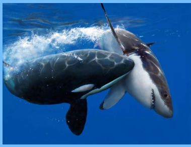

Белая акула
Бе́лая аку́ла, или больша́я бе́лая аку́ла, или аку́ла-людое́д, или кархародо́н (лат. Carcharodon carcharias), —
вид хрящевых рыб монотипического рода белых акул семейства сельдевых акул. В средствах массовой информации также
известна как большая белая акула (англ. Great white shark).
Белая акула встречается в поверхностных прибрежных и открытых водах всех океанов Земли (кроме Северного Ледовитого).
Является одной из крупнейших хищных рыб на Земле. Самки крупнее самцов и в среднем вырастают до 4,6—4,8 м в длину,
хотя иногда встречаются акулы длиной более 5 метров, и исторически были зарегистрированы особи длиной свыше 6 м и имевшие массу не менее 1900 кг.
Половая зрелость у самок наступает в возрасте около 33 лет, у самцов — примерно 26 лет. Продолжительность жизни оценивается приблизительно в 70 лет.
Рацион взрослых особей в основном состоит из мелких морских млекопитающих; но они охотятся также на разнообразных рыб, морских птиц и других животных.
Считается, что это самый опасный для человека вид акул, именно белой акуле приписывают большинство нападений на людей.
Находится на грани исчезновения — на Земле насчитывается около 3500 особей.
Поведение и социальная структура белых акул ещё недостаточно изучены. В водах ЮАР наблюдается иерархическое доминирование по полу, размеру и резидентности: самки доминируют над самцами, крупные акулы — над мелкими, резидентные — над новичками. Во время охоты белые акулы обычно разделяются и разрешают конфликты с помощью ритуалов и демонстративного поведения. Они редко вступают в драку друг с другом, хотя на теле отдельных особей находили следы зубов соплеменников. Вероятно, когда одна акула подплывает к другой слишком близко, та может нанести ей предупредительный укус, кроме того, белые акулы могут демонстрировать свою доминантность с помощью укусов.
Белые акулы — одни из немногих акул, которые регулярно приподнимают голову над поверхностью воды, чтобы оглядеться в поисках добычи. Такое поведение характерно также для мальгашских ночных акул. Существует версия, что акулы таким способом лучше улавливают запахи, поскольку в воздухе они распространяются быстрее, чем в воде. Белые акулы очень любопытны, демонстрируют сообразительность и прибегают к общению, если того требует ситуация. К берегам Сил-Айленд[en], ЮАР, они ежегодно приплывают и уплывают стабильными группами, в состав которых входят от 2 до 6 особей. Неизвестно, существуют ли между членами групп родственные связи, но по отношению друг к другу они ведут себя довольно мирно. Вероятно, социальная структура подобных групп наиболее сопоставима с волчьей стаей; каждый член стаи имеет установленный статус, в группе есть альфа-лидер. При встрече члены разных групп акул определяют социальный ранг, не прибегая к насилию.
Белая акула встречается в поверхностных прибрежных и открытых водах всех океанов Земли (кроме Северного Ледовитого). Является одной из крупнейших хищных рыб на Земле.
Самки крупнее самцов и в среднем вырастают до 4,6—4,8 м в длину, хотя иногда встречаются акулы длиной более 5 метров,
и исторически были зарегистрированы особи длиной свыше 6 м и имевшие массу не менее 1900 к. Половая зрелость у самок наступает в возрасте около 33 лет, у самцов —
примерно 26 лет. Продолжительность жизни оценивается приблизительно в 70 лет. Рацион взрослых особей в основном состоит из мелких
морских млекопитающих; но они охотятся также на разнообразных рыб, морских птиц и других животных. Считается, что это самый опасный для человека вид акул,
именно белой акуле приписывают большинство нападений на людей.
Находится на грани исчезновения — на Земле насчитывается около 3500 особей.

Кто может атаковать акулу?

В океане обитают рыбоподобные существа, которые, конечно, намного умнее, и даже крупнее, чем акулы. Это дельфины и киты, особенно очень крупные, которые относятся
к дельфиновому семейству – их называют косатки. На речных акул нередко нападают крокодилы. Опасными для акул могут быть рыба марлин и рыба меч.
Как косатки нападают на акул?
Косатку нередко зовут китом-убийцей, и вовсе не за ласковый характер. С маленькими акулами это мощное и умное существо справляется без особенных усилий, однако н
ередко ей приходится сталкиваться с акулами одинакового размера и силы. И здесь разыгрывается сражение, чей исход трудно предсказать. Когда силы одинаковы, можно
победить только правильно выбранной тактикой и стратегией. Самые эффективные приемы единоборства являются универсальными и похожими у людей и животных. Косатки
справляются с большими акулами, нападая на них, поражая их ударами, напоминающими приемы каратэ.
Неоднократно морские биологи наблюдали битвы акул и косаток, где киты-убийцы себя вели всегда конкретным образом. Они выталкивали на поверхность воды акулу,
а сами располагалис вертикально вниз головой, обрушиваясь на акулу своим большим хвостом. В воде формируется воронка, куда попадает акула, и по причине движения
водоворота она теряет способность двигаться активно. Косатка в этот момент сжимает на голове акулы челюсти и переворачивает ее на спину. В таком положении акула
становится беспомощной и практически обреченной.
Нередко подобные сражения случаются у берегов Новой Зеландии. При этом соперниками косаток становятся наиболее крупные экземпляры акул-мако, крупных белых и
тигровых акул.
10 самых опасных морских животных
.jpg)
Португальский кораблик — целая колония медуз, охотящаяся на других морских обитателей с помощью длинных ядовитых щупалец. Основа «кораблика» в это
время плавает на поверхности воды, но её легко не заметить. Каждый год они отравляют несколько тысяч людей.
Кубомедузы уже давно прославились как одни из самых опасных созданий у берегов Австралии. Их щупальца, числом до 60 штук, достигают в длину четырёх
метров. Яд у некоторых их видов может парализовать человека при одном касании и заставить захлебнуться.
Синекольчатые осьминоги — такие же легенды среди моллюсков, как кубомедузы — среди стрекающих. Это самые ядовитые создания во всех океанах мира,
атака которых приводит к параличу и смерти.
Большие белые акулы гораздо страшнее на экране, чем в реальности, но это не делает их менее грозными хищниками. Зафиксировано как минимум 74
неспровоцированных нападения на людей, в том числе атаки на рыбацкие лодки.
Морские змеи экипированы более сильным токсичным ядом, чем свои наземные родственники — попросту потому, что рыбы не столь чувствительны к отраве.
Их яд, как и у всех аспидов, обладает парализующим эффектом. К счастью для людей, они пускают своё оружие в ход в основном только на охоте, и при
осторожном обращении не кусаются.
Крылатки не мелочатся на шипы, щедро выставляя их по всему телу. Они весьма успешно охотятся на других рыб, захватывая даже территории, которые не
нужны для выживания их вида. Из-за ядовитости и распространённости крылатки являются настоящей головной болью для рыбаков.
Крокодилы в основном предпочитают реки, но крупнейший их представитель — гребнистый крокодил — вовсе не прочь поплавать в солёной воде. Самцы этого
вида вырастают до семи метров длины и двух тонн веса. Агрессивные экземпляры нередко нападают на людей.
Большие барракуды — впечатляющие хищники, вырастающие до двух метров в длину. Их зубы считаются одними из острейших и самых болезненных среди всего
морского мира. Барракуды часто следуют за ныряльщиками из чистого любопытства, но атакуют крайне редко. Правда, если такое происходит, то смертельный
исход гарантирован.
Миллепоры, они же огненные кораллы — чрезвычайно ядовитые стрекающие с обманчиво безопасной внешностью. Одно прикосновение к ним обеспечит человека
сильнейшим ожогом, впоследствии перерастающим в язву. Это не смертельно, но контакт может вызвать болевой шок и потерю сознания.
Бородавчатки, они же рыбы-камни могут похвастаться не только выдающейся внешностью, но и ужасным смертельным ядом. К тому же, крайне болезненным. Их
спинной плавник содержит 12 острых шипов, каждый из которых оснащён отдельным мешочком с отравой. Учитывая привычку бородавчаток отдыхать на мелководье,
наступить на них и получить дозу яда — вполне реальная опасность.